Central Processing Unit
Arithmetic Logic Unit
In our discussion of the arithmetic unit, we focused on just arithmetic. But in addition to arithmetic, computers perform logic operations such as AND, OR, and NOT. The unit that performs arithmetic and logic is called, appropriately enough, the arithmetic logic unit (ALU). The circuit below represents a simple 1-bit ALU.
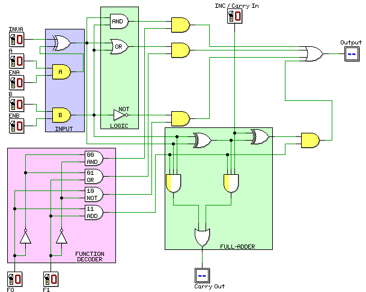
The logic functions (AND, OR, NOT) are each carried out by a single gate of the appropriate type and arithmetic is carried out by a full-adder.
The light yellow AND gates all serve as enable gates. When one of these gates is enabled (by the function decoder, ENA, or ENB) the other signal coming into the gate is allowed to propagate through the gate. The input coming from the decoder into the AND gates in the full-adder also act as enable signals. The other two signals coming into these gates determine whether a carry is generated by the corresponding half-adder.
The function decoder control lines (F0 and F1) determine which function is performed (see the table below). The active output of the decoder enables the enable gate(s) for the selected function leaving the other enable gates disabled.
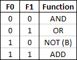
The input logic determines what values will be manipulated by the ALU. The B path is controlled by the ENB signal. If ENB is high, the ALU will see the value of B. If ENB is low, the ALU will see 0. The A path is controlled by both ENA and INVA:
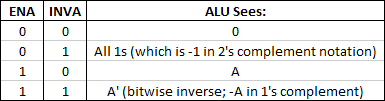
If INVA is low, the signal from the A enable gate will be presented to the ALU. If INVA is high, the 1's complement of the signal from the A enable gate will be presented to the ALU.
A multi-bit ALU can be constructed by using one of these 1-bit ALUs in each bit position. The INC control signal is wired to the carry-in of the ALU in the least significant bit position. All of the other control signals are applied to all of the ALUs making up the multi-bit ALU. For each ALU but the one in the least significant bit position, the carry-in to the ALU comes from the carry-out of the previous (less significant) ALU. Collectively, the ALUs form a ripple adder whose carry-in is determined by the INC signal.
Give that there are six control lines (F0, F1, ENA, ENB, INVA, and INC) there are 64 possible combinations of control inputs. However, not all of these combinations are particularly useful and some may be duplicates (for example, there are at least three ways to produce a 0 as the output of the ALU). The table below illustrates some useful combinations of control inputs. If the input is left blank, then the value for that input is irrelevant. For example, the INC input is irrelevant unless the function is ADD. For the NOT function, ENA, INVA, and INC are all irrelevant. All arithmetic operations are in 2's complement notation.
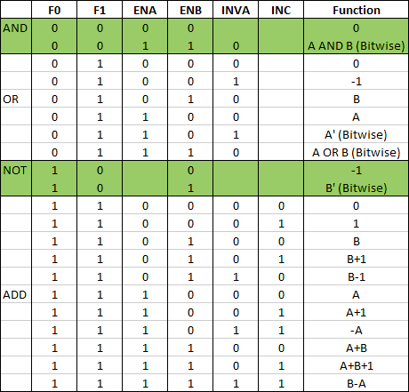
Data Path
The data path refers to the connections between the CPU registers and the ALU. The data path for our CPU is illustrated below. There are three data buses. The A bus provides input to the A side of the ALU. The only register connected to the A bus is R9. The B bus provides input to the B side of the ALU. Registers R0-R8 are connected to the B bus but, during any given cycle, only one of them can actually write data to the B bus. The C bus is used to copy the contents of the shift register to any combination of registers (except R2/3).
This analogy may help. Think of a soda bottling plant that can bottle orange, grape, and lime soda. The B bus represents the pipe from the source of the soda to the bottling machines. You can connect the pipe to the source of orange soda, the source of grape soda, or the source of lime soda. However, you can't connect the pipe to more than one source at a time. The C bus represents the pipe that distributes the soda. That pipe can fill one bottle at a time or a dozen bottles at a time. The analogy fails in that the source of the soda and the destination (the bottle) represent two distinct things. In our data path, however, the registers serve as both the source and the destination.
In the drawing below, each open arrow corresponds to an output enable signal that enables a register to write its data to the B bus. Only one output enable can be high during any cycle. A closed arrow represents an input enable signal that allows a register to read the data on the C bus. Any number of these input enable signals can be high during a cycle.
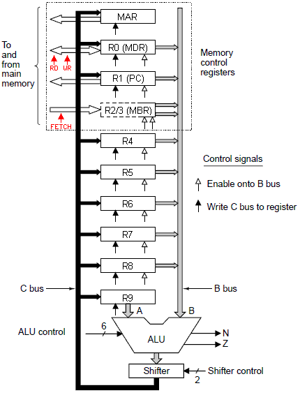
The registers in this CPU are 32-bit registers (we say the word size is 32 bits or 4 bytes) and, of course, the ALU is a 32-bit ALU. Registers R4-R8 are general purpose registers. That is, they have no special purpose as far as the hardware is concerned though they may be used for special purposes by the machine language instruction set. Register R9 is special in that it always writes its data to the A bus.
Accessing Data in Memory
The first four registers are special purpose registers used to access memory. The top two registers are used to access data. The top register (the memory address register or MAR) is used to store a memory address and the second register (the memory data register or MDR) is used to store data. The MAR can read a value only from the C bus and write its value only to the memory address bus.
The MAR stores word addresses (rather than byte addresses). Word 0 starts at byte 0, word 1 starts at byte 4, word 2 starts at byte 8 and so on. Word n starts at byte 4n. Since a left shift is equivalent to multiplying by 2, a two-bit shift is the equivalent of multiplying by 4. The value in the MAR is shifted left 2 places before being copied to the memory address bus (which transmits byte addresses).
The MDR is bi-directionally connected to the memory data bus. During a read operation the data at the word address in the MAR is read into the MDR. During a write operation, the data in the MDR is written to the word address stored in the MAR. Notice that the MDR can also write to the B bus and read from the C bus.
Accessing Machine Language Instructions in Memory
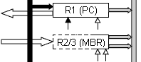 The next two registers are used to access machine language instructions which are read in as a byte stream. The program counter (PC) contains the byte address of the next byte in the program. Like the MAR, the PC can write to the memory address bus but cannot read from it. The PC can can also write to the B bus and read from the C bus.
The data at the byte address stored in the PC is read into the low-order 8 bits of the MBR (memory byte register). Like the MDR, the MBR can read from the memory data bus and write to the B bus. Unlike the MDR it can neither write to the memory data bus nor read from the C bus.
You probably noticed that the MBR register is identified as R2/3 and has two B bus control signals. Remember that the MBR register contains one byte of data which must be transferred to the 32-bit B bus. When accessed as R2, the high-order 24 bits will be the same as the high order bit of the byte data. Here are two examples:
01101101 is written as 00000000 00000000 00000000 01101101
10010011 is written as 11111111 11111111 11111111 10010011
This is referred to as sign extension since the high-order bit of the byte data is the sign bit in 2's complement notation. Sign extension preserves the signed value of the byte. In the first example above, the 8-bit byte and the 32-bit word both represent 109 in 2's complement. In the second example, the 8-bit byte and the 32-bit word both represent -109 in 2's complement.
When the contents of the MBR are transferred to the B bus as R3, the high-order 24 bits are all set to zero. Here are two examples:
01101101 is written as 00000000 00000000 00000000 01101101
10010011 is written as 00000000 00000000 00000000 10010011
The value of the byte data is transferred as a 32-bit unsigned integer having the same unsigned value as the byte data itself. In the first example, both the 8-bit byte and the 32-bit word have an unsigned value of 109. In the second example, both the 8-bit byte and the 32-bit word have an unsigned value of 147.
Memory Access in General
Whether accessing data or machine language code, the general procedure is to load the address register (MAR or PC) and the MDR (for a write operation) and assert the appropriate control signal (WR, RD, or FETCH). This happens near the end of a clock cycle and the operation doesn't have enough time to complete before the beginning of the next cycle. Consequently, the operation will not be complete until the beginning of the second clock cycle following the initiation of the operation. While this is true for any memory operations, it is most significant for RD and FETCH. In either case, the value in the data register (MDR or MBR) will not be correct until the beginning of the second clock cycle following the initiation of the read operation. Consequently, there must always be one microinstruction between the instruction that asserts the RD or FETCH signal and the instruction that retrieves the data from the MDR or MBR.
The illustration below shows the timing diagram and how signals propagate through the CPU. Notice that because the MAR (or PC) is loaded just before the end of clock cycle 1 (at the rising edge of the clock), there is not enough time for memory to respond before the beginning of clock cycle 2. Consequently, the value read from memory will not appear in the MDR (or MBR) until the beginning of clock cycle 3. Of course, the instruction executed during clock cycle 2 can do anything else it needs to do while waiting for memory to respond to the read or fetch request.
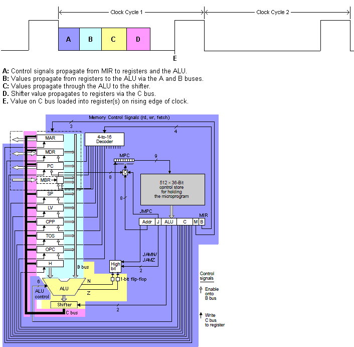
ALU Modifications
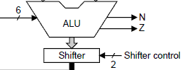The ALU has been modified to include two additional 1-bit outputs called flags. The N flag is tied to the most significant bit of the ALU output. Consequently, the N flag goes high if the ALU output, interpreted as a two's complement integer, is negative. Otherwise, the N flag is low. The Z flag goes high if the ALU output bits are all zero.
The shifter in this data path is a little different than the shifter we looked at in the ALU section. That shifter had three options: no shift, shift left one bit position, and shift right one bit position. This shifter also has three options but they are different: no shift, shift right one bit position with sign extension (SRA1), shift left eight bit positions with zero fill (SLL8).
When a right shift (SRA1) is performed, the output of the ALU is shifted one bit position to the right without changing the value in the most-significant bit position (the sign bit). In effect, bits 1-31 are copied into bit positions 0-30 leaving the value in bit 31 unchanged. A couple of examples are given below. The only difference in them is the sign bit (the most-significant bit). In either case, the vacated sign-bit is filled by the value of the sign bit. This kind of shift is called an arithmetic shift and SRA1 is short for "Shift Right Arithmetic 1".
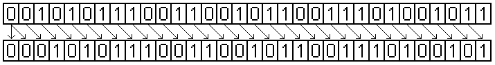
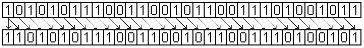
When a SLL8 occurs, the ALU output is shifted to the left 8 bit positions with vacated bit positions replaced with zeroes. Here is an example:
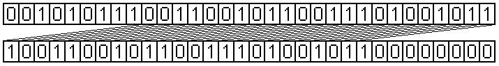
This kind of shift is called a logical shift and SLL8 is short for "Shift Left Logical 8".
Microinstructions
A microinstruction is a bit pattern in which each bit (or combination of bits) drives the control signals of the hardware. A microprogram is a series of microinstructions that accomplishes some specific task. Ultimately, our goal is to write a microprogram that interprets the machine language instruction set of our example computer. The instructions in a microprogram are stored in a block of memory called a control store. This memory is part of the CPU. In our example CPU, the control store can store 512 microinstructions.
In the data path illustrated above, there are 29 control signals. If each signal were driven directly by a single bit, a 29-bit microinstruction might be laid out as shown below. The value (0 or 1) in each bit position is the value applied to the corresponding control signal.
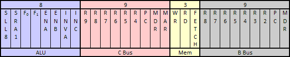
We can simplify our design by observing that only one of the CPU registers (R0-R8) can be sent to the B bus at any given time. We can choose 1 of 9 registers with a 4-bit decoder allowing us to reduce the 9-bit B bus field shown above into a 4-bit decoder field as illustrated below.
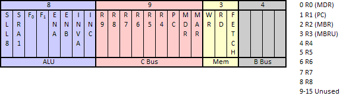
Branching
A computer instruction set (at any level) must incorporate some branching mechanism in order to provide for selection structures and looping structures. We will add three additional control signals to our microinstruction format to support branching. (The names I've given these bits differs from Tanenbaum's nomenclature and, in my opinion, make more sense.)
- JMP (Jump)
- JMPN (Jump if N flag is 1)
- JMPZ (Jump if Z flag is 1)
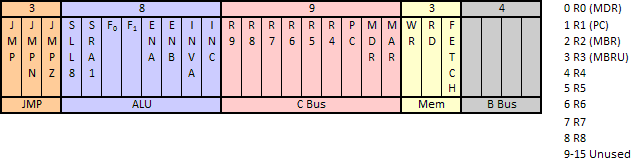
The Address of the Next Microinstruction
Finally, at any given point in a microprogram, we must make some provision for determining the address of the next microinstruction. Since our microstore can store 512 microinstructions, we will add a 9-bit address field to our microinstruction format to store the address of the next instruction. This field will also be used when a jump occurs as described below. Our final microinstruction format is given here:
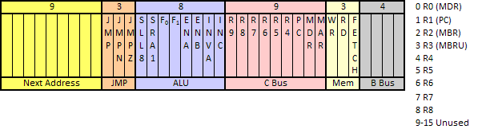
Control Logic
Now that we have designed the microinstruction format, we need just a little more logic to implement the control functions of the CPU:
- The control store which will be used to store the microprogram.
- A register (named microinstruction register or MIR) to store the current microinstruction.
- A register (named microprogram counter or MPC) to store the address of the next microinstruction.
- A decoder to decode the value in the B bus field of the microinstruction.
- Some additional logic to determine the next address when one of the JMP bits is set.
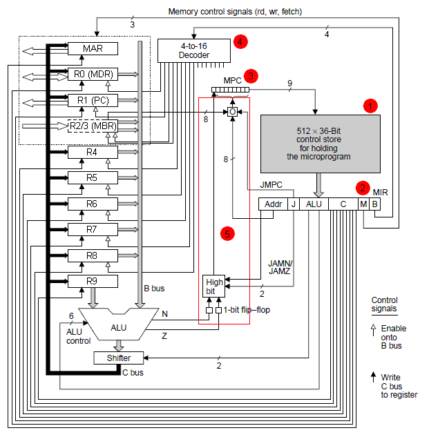
The MIR reads its value from the control store data bus and that value is used to drive the control signals of the CPU. The MPC places its value on the address bus of the control store in order to determine which microinstruction will be loaded into the MIR. The decoder was discussed earlier in the section on microinstructions. That leaves the logic that processes the JMP bits.
Jumps and the MPC Register
The MPC is a 9-bit register whose value determines the location of the next microinstruction. Conceptually, this value is broken into two parts; the high-order bit and the 8 low-order bits. If the high-order bit is 0 then the 8 low-order bits represent an address in the lower half of the control store (words 0 -255). If the high-order bit is 1 then the 8 low-order bits represent an address in the upper half of the control store (words 256-511).
The logic that determines the value of the MPC is shown below. The logic in blue corresponds to the small box with an "O" in it in the diagram above and determines the 8 low-order bits of the MPC . If JMP is low, the 8 low-order bits of the next address field are copied into the 8 low-order bits of the MPC register. If JMP is high, the 8 low-order bits of the next address field are ORed with the 8 low-order bits of the MBR register and the result is copied into the 8 low-order bits of the MPC register. This logic can be expressed as follows where register identifiers refer to the 8 low-order bits and the operators are logic operators rather than arithmetic operators:
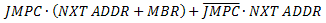
Typically, if JMP is high, the value in the next address field is 0x000 or 0x100 (both values in hexadecimal). That is, the 8 low-order bits are zeros and the high order bit is either 0 or 1. If the 8 low-order bits are zeroes, then the contents of the MBR will be copied into the 8 low-order bits of the MPC.
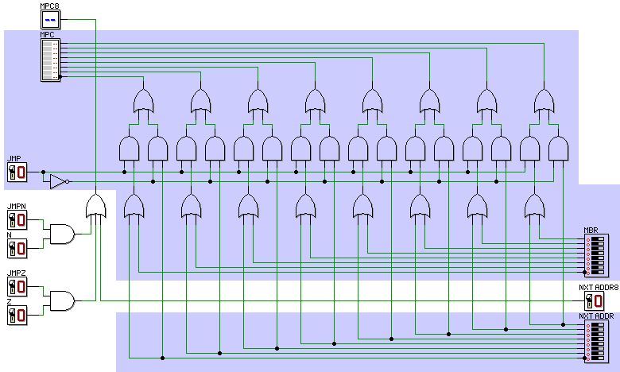
The remaining logic corresponds to the box with "High Bit" in it in the CPU diagram above and determines the value of the high-order bit in the MPC. It implements the following logic:
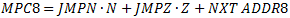
For either conditional jump to make sense, the value in the next address field must be of the form 0x0?? (i.e., the high order bit must be zero). If the conditional jump fails, the MPC will contain 0x0?? and if the jump succeeds the MPC will contain 0x1??. The table below summarizes useful combinations of JMP bits.
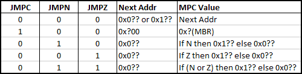
IJVM Level and Named Registers
In the discussion above, only the first four registers were named because they were used for special purposes. The remaining registers were unnamed because they represent general purpose registers. However, in the context of this course, our example architecture will be used to implement a specific machine language instruction set based on the Java virtual machine instruction set. We will be referring to the machine language level as IJVM which is short for Integer Java Virtual Machine. At the IJVM level, the registers do have special purposes and will be named accordingly:
- R4: SP, stack pointer
- R5: LV, local variables pointer
- R6: CPP, constant pool pointer
- R7: TOS, top of stack value
- R8: OPC, old program counter
- R9: H, hold (data for A bus)
At the IJVM level, the CPU diagram looks like this:
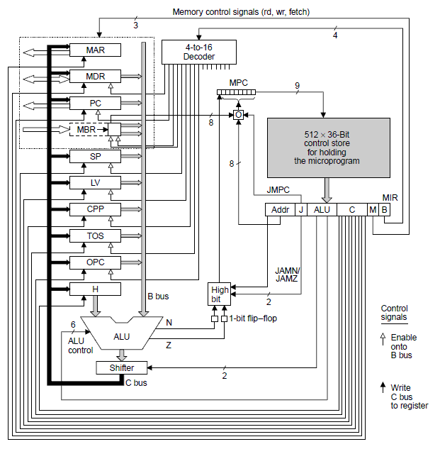
At the IJVM level, the microinstruction format looks like this:
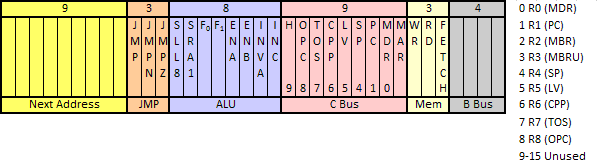
source: http://dsearls.org/courses/C391OrgSys/CPU/CPU.htm